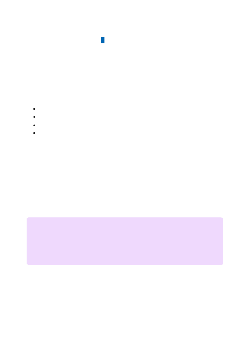

*The limits are subject to change. We anticipate that you will need higher limits as you
move toward production and your solution scales. When you know your solution
requirements, please reach out to us by applying for a quota increase here:
https://aka.ms/oai/quotaincrease
For information on max tokens for different models, consult the models article
To minimize issues related to throttling, it's a good idea to use the following techniques:
Implement retry logic in your application.
Avoid sharp changes in the workload. Increase the workload gradually.
Test different load increase patterns.
Create another OpenAI service resource in the same or different regions, and
distribute the workload among them.
The next sections describe specific cases of adjusting quotas.
At this time, due to overwhelming demand we cannot accept any new resource or quota
increase requests.
Learn more about the underlying models that power Azure OpenAI.
General best practices to mitigate throttling during
autoscaling
How to request increases to the default quotas and limits
７
Note
Ensure that you thoroughly assess your current resource utilization, approaching its
full capacity. Be aware that we will not grant additional resources if efficient usage
of existing resources is not observed.
Next steps